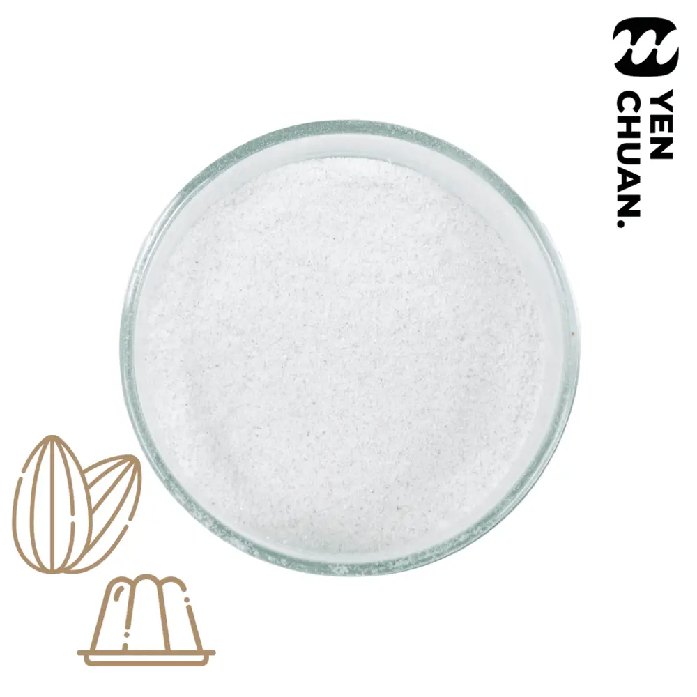

Almond jelly powder
Have you ever heard of almond jelly, or almond tofu? This dessert is very popular in Asia for its mild flavour and smooth texture.
While the traditional way needs ground apricot seeds, water and agar, this powder makes it much easier!
Enjoy it with some osmanthus syrup, or the Taiwan way with brown sugar syrup!
Wholesale prices depend on volume and destination. Our sales team or AI assistant replies with MOQ, lead time and shipping options.
Details
Unit size: 1kg
Units per carton: 20
Storage conditions: Room temperature
MOQ: 5 cartons
How to use:
1. Add 600ml water to pot, and heat until boiling
2. Slowly add 100g powder into the pot, stirring from bottom to top to
avoid burning
3. Once the water returns to boil, lower the heat and simmer for 1-2
minutes while stirring gently
4. Turn off the heat, and pour the mixture into a clean, dry container. Skim
off any foam and allow to cool. Store in fridge.
 10X fairy grass powder
10X fairy grass powder 200X aiyu jelly powder (caramel colour)
200X aiyu jelly powder (caramel colour) 200X aiyu jelly powder (yellow color)
200X aiyu jelly powder (yellow color)